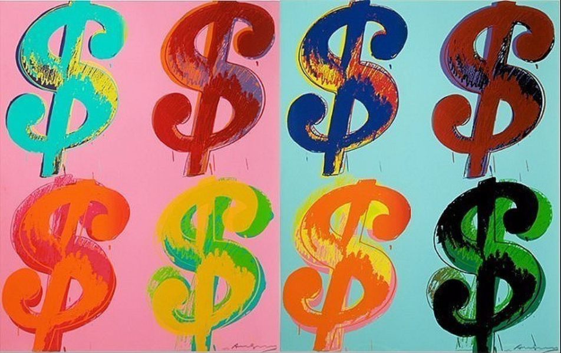

- Dadaism
- Surrealism
- Pop Art
Pop Art
Andy Warhol

Andy Warholwas an American artist, film director, and producer who was a leading figure in the visual art movement known as pop art.
His works explore the relationship between artistic expression, advertising, and celebrity culture that flourished by the 1960s, and span a variety of media, including painting, silkscreening, photography, film, and sculpture. Some of his best known works include the silkscreen paintings Campbell's Soup Cans (1962) and Marilyn Diptych (1962), the experimental films Empire (1964) and Chelsea Girls (1966), and the multimedia events known as the Exploding Plastic Inevitable (1966–67).

In 1964, Warhol opened his own art studio, a large silver-painted warehouse known simply as "The Factory." The Factory quickly became one of New York City's premier cultural hotspots, a scene of lavish parties attended by the city's wealthiest socialites and celebrities, including musician Lou Reed, who paid tribute to the hustlers and transvestites he'd met at The Factory with his hit song "Walk on the Wild Side" — the verses of which contain descriptions of individuals who were fixtures at the legendary studio/warehouse in the '60s, including Holly Woodlawn, Candy Darling, "Little Joe" Dallesandro, "Sugar Plum Fairy" Joe Campbell and Jackie Curtis. (Warhol was a friend of Reed's and managed Reed's band, the Velvet Underground.)